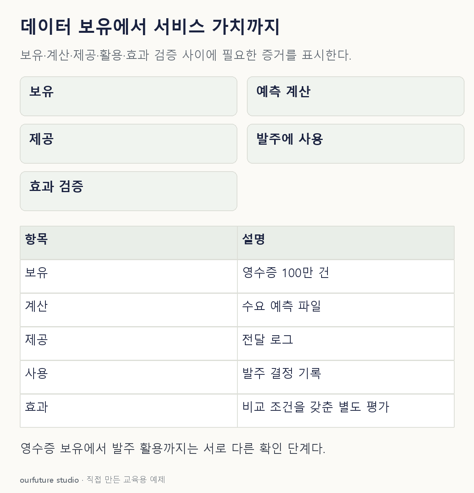

조건을 바꾸며 확인하기
선택한 단계보다 앞선 과정을 자동 검증하거나 실제 매출·비용의 개선을 계산하지 않는다.
기본 예제와 비교하기
아래 그림과 표는 글의 기본 조건입니다. 입력을 바꾼 결과는 계산 칸에서 확인하세요.

같은 문제를 직접 골라 보기
두 회사 모두 주문 기록을 보유한다. B는 점주에게 다음 날 발주 참고 예측을 제공하고 이용료를 받는다.
조건을 더 바꾸면?
B가 예측을 계산했지만 고객에게 제공하거나 내부 업무에 사용하지 않았다면?
변형 풀이 확인
분석 산출물은 있으나 활용과 서비스 제공은 확인되지 않았다.
계산의 존재와 이용자의 행동은 다른 관찰 대상이다.
누구에게 무엇을 제공하고 어떤 결정을 바꾸는가.